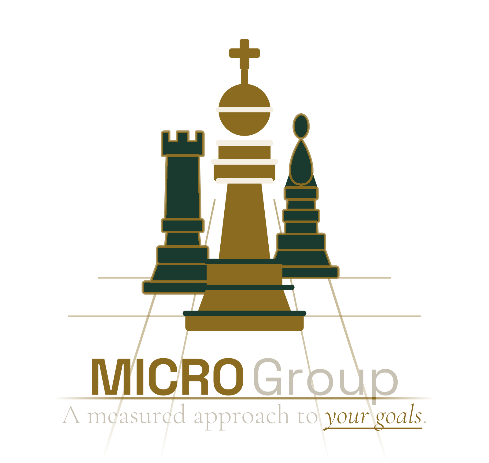

Management
Strategic direction and leadership capacity for institutions in transition or growth, including interim or fractional campaign management for candidates and political organizations.

MICRO Group is a strategic, research-driven consultancy serving nonprofit, government, and political and legislative organizations, through expertise in Management, Integration, Culture, Research, and Operations.
Each engagement is shaped around your organization's own goals rather than a fixed template. Beyond consulting, MICRO Group builds and sells purpose-built software for nonprofit grant-seeking — Almanac and Scribe are live today, with Concordance, Herald, Atlas, and Dossier built to varying degrees behind them.
Five consulting disciplines, a growing line of purpose-built software, and the institutions we serve.
Strategic direction and leadership capacity for institutions in transition or growth, including interim or fractional campaign management for candidates and political organizations.
Programs, teams, software, and data brought into one working system, including voter file, donor, and constituent database management, with training for the people who use it.
Team building and employee engagement aimed at collaboration that outlasts the workshop.
Applied research grounded in the founder's legislative background — policy and bill analysis, opposition research, and electoral and district-level data analysis.
Operational management focused on getting more out of the resources you already have.
Finds and ranks funders and open grants that fit your organization, with a public source shown for every match. Standard: $1,500/yr, refreshed quarterly. Pro: $3,000/yr, refreshed monthly.
Open →Drafts a near-submission grant application from an Almanac match, fact-checked against your organization's own public information. Standard: $1,500/yr, one draft per quarter. Pro: $3,000/yr, one draft per month.
Open →Identifies the people who govern a funding foundation's board and maps introduction paths.
In developmentOpen →Monitors funder pages on a client's watch list for cycle openings, deadline changes, and guideline updates.
In developmentOpen →Benchmarks a foundation's giving against aggregate state-level 990-PF data.
In developmentOpen →Reconciles a foundation's claimed giving against its own filed 990-PF.
In developmentOpen →Infrastructure & Updates: a $1,500/year add-on covering ongoing technical support and system updates for an active Almanac or Scribe subscription. Every other engagement, including the consulting disciplines above, is scoped and priced individually.
National and local organizations across a range of missions, including MICRO Group's own software products built for nonprofit grant-seeking.
Municipal, state, and federal agencies and public departments.
Campaigns, candidates, committees, and advocacy organizations. This service line becomes active upon the founder's departure from nonpartisan public-sector analyst work, effective July 31, 2026.
MICRO Group operates today across four Texas counties: Austin-Travis County, San Antonio-Bexar County, the Dallas-Fort Worth Metro, and Houston-Harris County. Requests and solicitations from beyond that footprint are accepted worldwide.